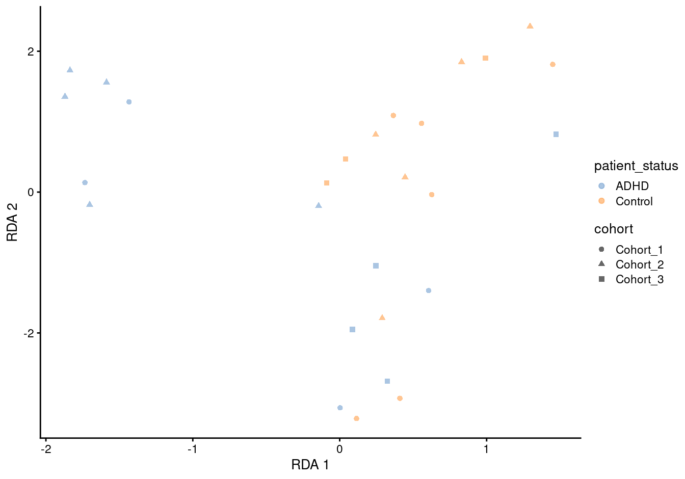
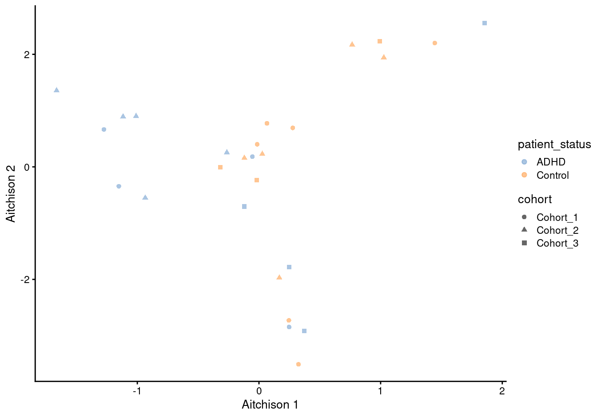
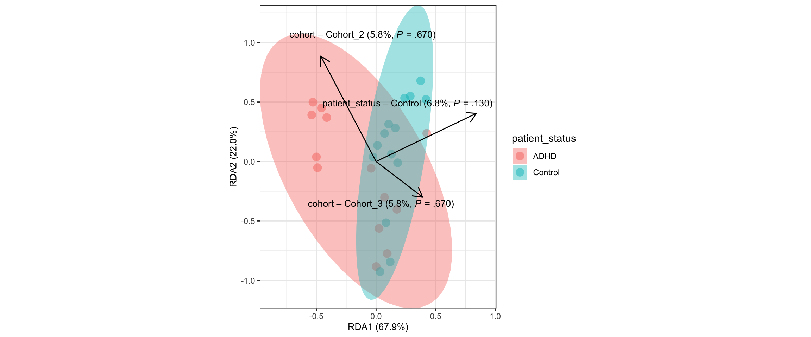

# load dataset and store it into tse
data("Tengeler2020", package = "mia")
tse <- Tengeler2020distance-based Redundance Analysis (dbRDA)
Overview
To get started, we import Tengeler2020 from the mia package and store it into a variable.
First off, we transform the counts assay to relative abundances and store the new assay back in the TreeSE.
tse <- transformAssay(tse, method = "relabundance")Ordination
RDA with Bray-Curtis index
tse <- runRDA(tse,
formula = assay ~ patient_status + cohort,
FUN = vegan::vegdist,
method = "bray",
assay.type = "relabundance")p <- plotReducedDim(tse, "RDA",
colour_by = "patient_status",
shape_by = "cohort")

RDA with Aitchison distance
# perform clr transformation
tse <- transformAssay(tse,
assay.type = "relabundance",
method = "clr",
pseudocount = 1)
# run RDA
tse <- runRDA(tse,
formula = assay ~ patient_status + cohort,
FUN = vegan::vegdist,
method = "euclidean",
assay.type = "clr",
name = "Aitchison")
# plot RDA
p <- plotReducedDim(tse, "Aitchison",
colour_by = "patient_status",
shape_by = "cohort")p

Significance testing
PERMANOVA analysis
rda <- attr(reducedDim(tse, "RDA"), "obj")
set.seed(123)
terms_permanova <- anova.cca(rda,
permutations = 99)
set.seed(123)
margin_permanova <- anova.cca(rda,
by = "margin",
permutations = 99)| Df | SumOfSqs | F | Pr(>F) | Total variance | Explained variance | |
|---|---|---|---|---|---|---|
| Model | 3 | 0.6823806 | 1.0731820 | 0.39 | 5.557215 | 0.1227918 |
| patient_status | 1 | 0.3789554 | 1.7879527 | 0.13 | 5.557215 | 0.0681916 |
| cohort | 2 | 0.3212246 | 0.7577863 | 0.67 | 5.557215 | 0.0578032 |
| Residual | 23 | 4.8748344 | NA | NA | 5.557215 | 0.8772082 |
Test homogeneity assumption
homo1 <- anova(betadisper(vegdist(t(assay(tse, "relabundance"))), tse$patient_status))
homo2 <- anova(betadisper(vegdist(t(assay(tse, "relabundance"))), tse$cohort))| Df | Sum Sq | Mean Sq | F value | Pr(>F) | |
|---|---|---|---|---|---|
| patient_status | 1 | 0.0012087 | 0.0012087 | 0.0891227 | 0.7677628 |
| cohort | 2 | 0.0017934 | 0.0008967 | 0.0726010 | 0.9301753 |
RDA plot with weights
